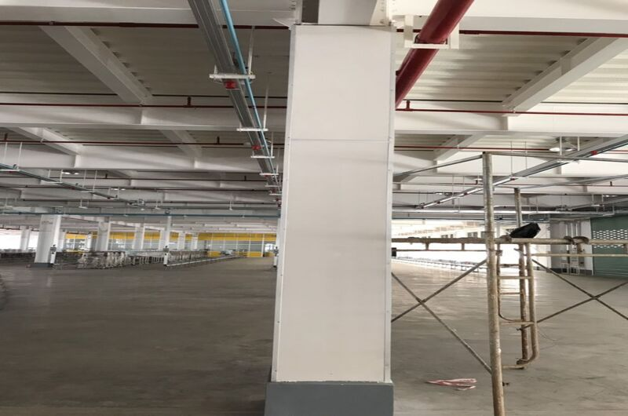

Tiêu chí đánh giá giải pháp ốp dầm chống cháy đạt chuẩn
Trong ngành xây dựng, an toàn cháy nổ luôn là một yếu tố quan trọng và không thể bỏ qua. Đặc biệt, khi xây dựng các công trình có yêu cầu cao về chống cháy như các tòa nhà cao tầng, nhà xưởng hay các công trình công cộng, việc áp dụng các giải pháp chống cháy hiệu quả là cực kỳ quan trọng.
Trong bài viết này, chúng ta sẽ tìm hiểu về tiêu chí đánh giá giải pháp ốp dầm cho cột chống cháy đạt chuẩn.

Giải pháp ốp dầm cột chống cháy mang đến nhiều ưu điểm quan trọng, giúp bảo vệ cấu trúc và giảm thiểu rủi ro cháy nổ. Khi đánh giá các giải pháp ốp dầm cột chống cháy, có một số tiêu chuẩn quan trọng cần xem xét.
- Thời gian chống cháy (Fire Resistance Rating): đây là tiêu chuẩn đánh giá khả năng của một hệ thống ốp dầm cột để chịu lửa trong một khoảng thời gian nhất định trước khi bị phá hủy hoặc mất khả năng chống cháy. Tiêu chuẩn này thường được đo bằng thời gian tính từ khi hệ thống bị cháy đến khi nó không còn đáp ứng được các yêu cầu chống cháy.
- Độ dày vật liệu (Material Thickness): độ dày của vật liệu ốp dầm cột là một yếu tố quan trọng trong việc xác định khả năng chống cháy của nó. Vật liệu cần đủ dày để chịu được tác động nhiệt từ ngọn lửa trong một thời gian nhất định mà không bị phá hủy.
- Chất liệu chống cháy (Fire-resistant Materials): các vật liệu được sử dụng trong hệ thống ốp dầm cột chống cháy cần có tính chất chống cháy. Vật liệu chống cháy có khả năng ngăn chặn sự truyền nhiệt và cháy lan, giúp bảo vệ ốp dầm cột khỏi tác động của ngọn lửa.
- Tuân thủ quy định và tiêu chuẩn an toàn cháy nổ (Compliance with Fire Safety Regulations and Standards): các giải pháp ốp dầm cột chống cháy cần tuân thủ các quy định và tiêu chuẩn về an toàn cháy nổ trong ngành xây dựng. Điều này đảm bảo rằng hệ thống ốp dầm cột đáp ứng được các yêu cầu và tiêu chuẩn an toàn cháy nổ cụ thể.